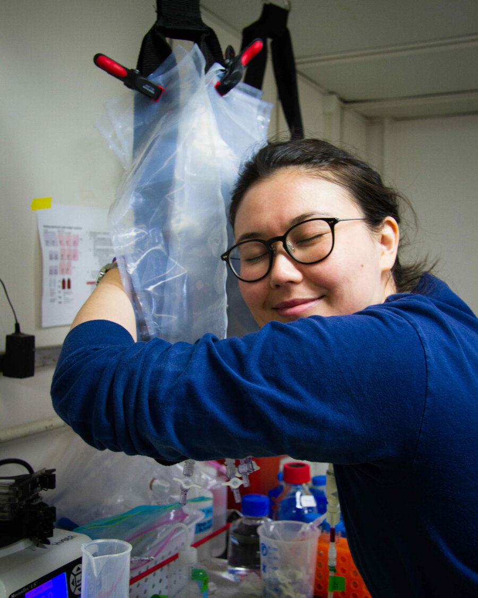
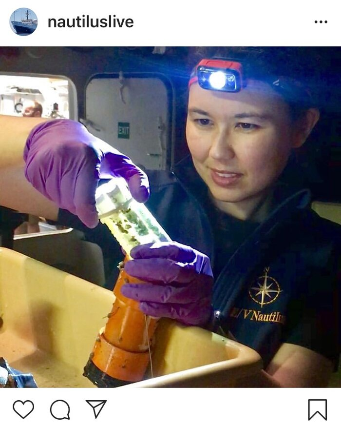
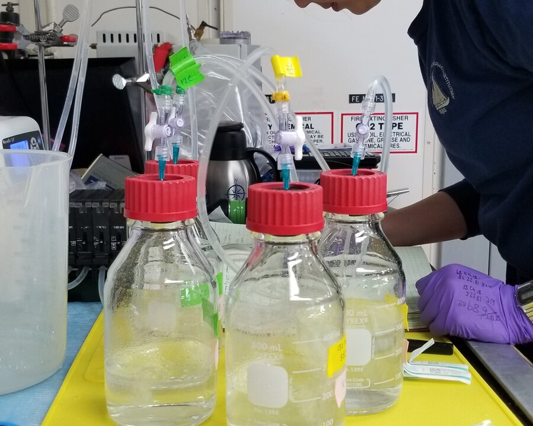
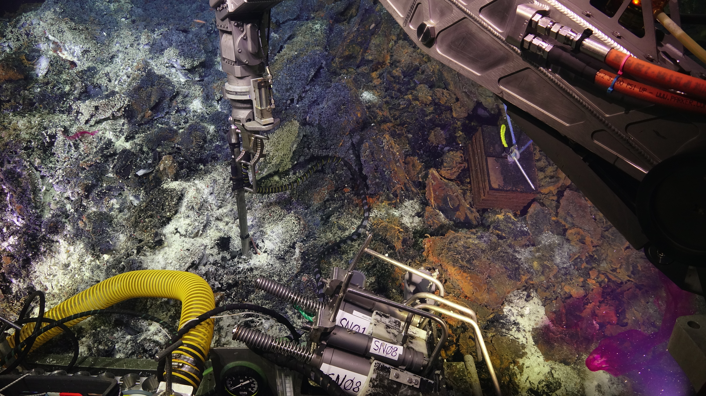
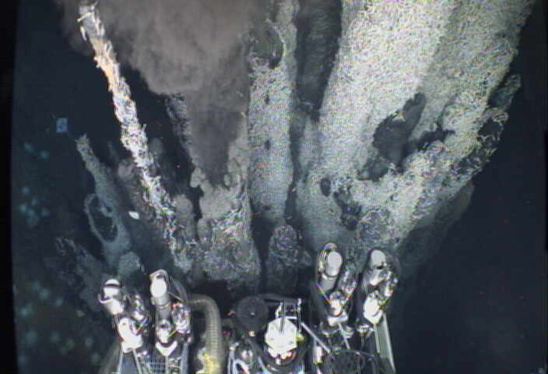
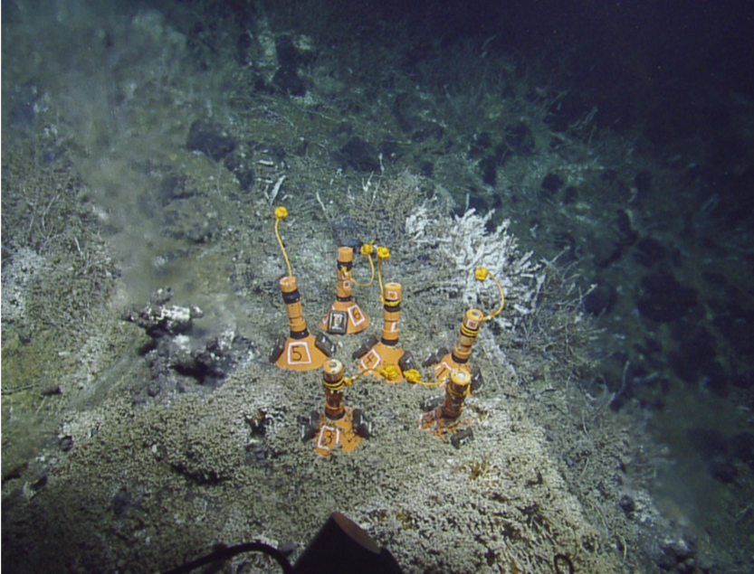
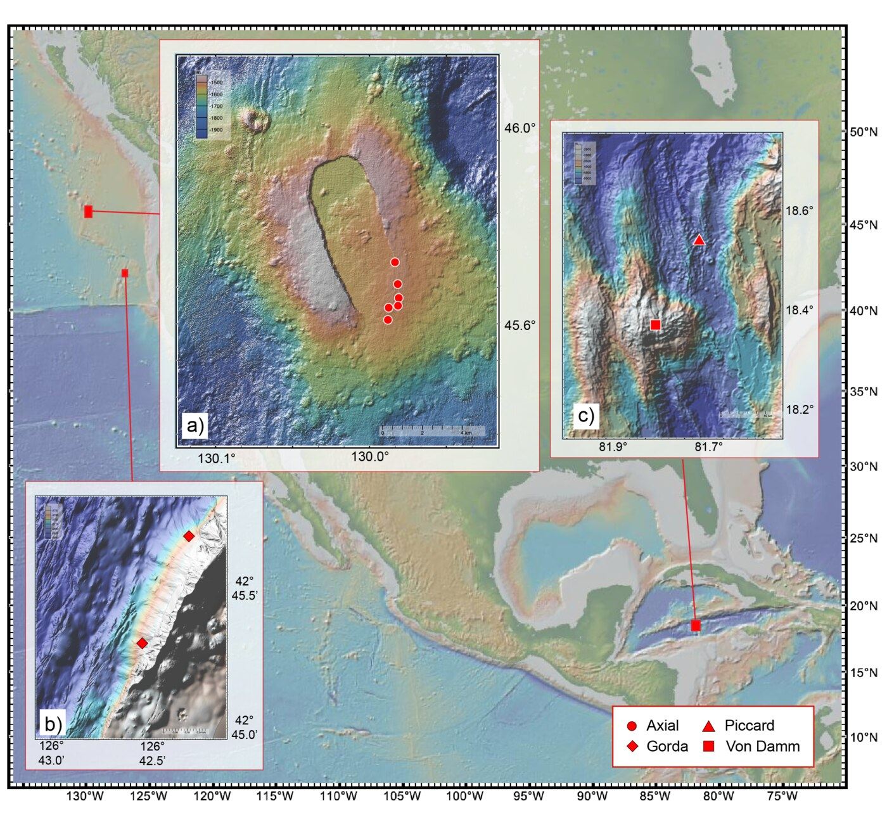

Deep-sea vents
Highly reduced and thermally charged venting fluids from the subseafloor mix with surrounding seawater, creating a sharp geochemical gradient which promotes a hub of biological diversity at the site of venting fluid. Studies of bacterial and archaeal chemosynthetic populations at vent sites have established the roles these microorganisms play in deep-sea carbon cycling and opened a window into subseafloor microbiology. Studies of deep-sea food webs and ecological interactions rarely cover the microbial eukaryotic assemblages.
Heterotrophic protists are ubiquitous in aquatic ecosystems and transfer organic carbon from primary producers to higher trophic levels. Protists are present and active at deep-sea hydrothermal vents, and surveys of these populations have identified many species as heterotrophic grazers and parasites. Efforts to quantify protistan grazing pressure in the deep sea remain rare.
Questions
What is the role of protists in deep-sea hydrothermal vent food web ecology?
How does protistan diversity, distribution, and activity influence carbon flux in the deep sea?
What is the biogeography and distribution of the deep-sea hydrothermal vent microbial eukaryotic community?
What biotic or abiotic parameters appear to influence protistan community diversity at deep-sea hydrothermal vents?
Accessing deep-sea food webs
To assess microbial biodiversity, we rely on sequencing the DNA from microbial cells that are collected onto a filter. The genetic material is extracted and sequenced so we can gain a snapshot of the microbial community composition (who is present?). These molecular approaches underpin most of what we know about microbial communities in deep-sea and difficult-to-reach habitats. Reaching those habitats takes engineering and planning. We use remotely-operated or human-operated vehicles (ROVs and HOVs) deployed from a ship, then either run experiments shipboard once the ROV returns with hydrothermal vent fluid, or have the ROV collect samples in situ.
For this work, I run incubations with diffuse flow fluid collected via ROV to capture the grazing activity of heterotrophic protists. Consumption of microbial prey by protistan grazers (heterotrophs) is a key route of carbon exchange (the transfer of chemosynthetic microorganisms to higher trophic level), and these experiments yield a grazing rate (cells consumed mL-1 day-1). To assess grazing pressure, I compare grazing rates and community compositions of protistan assemblages within discharging vent fluid, the plume (the hydrothermally-influenced environment above the vent site), and background deep-sea water.

Protistan grazing is higher within diffuse vent fluid
In aquatic habitats, transition zones driven by changes in chemistry or nutrients create biological ‘hotspots’ of microbial activity. The hydrothermal vent environment is one such transition zone, where reduced vent fluid mixes with cold, oxygenated seawater over centimeter to meter scales.


Deep-sea vent protists
We conducted an 18S rRNA gene survey to see how distinct microbial eukaryotic populations were within vent fluids situated meters apart compared to oceans apart.
The total number of protistan species detected with amplicon sequencing was consistently higher within diffusely venting fluid at each vent site than in the plume or background environment. Few species were shared across vent fields, and populations at individual vent sites only meters apart were largely distinct from one another.
Protistan diversity is elevated within diffuse vent fluid

Microbes need frenemies
Can the interaction of microbes with others be defined as friendly? rival? or frenemy?
Ecological interactions among bacteria and archaea, viruses, and eukaryotic microorganisms are critical junctions in marine food webs, ranging from mutually beneficial relationships to sources of microbial mortality. Virus-microbe and eukaryote-microbe interactions at deep-sea hydrothermal vents affect local carbon cycling. This project identifies those interactions, specifically cell death by protistan grazing or viral lysis, and asks how they vary across hydrothermal vent habitats. The goal is a better food web model of deep-sea hydrothermal vents and a clearer picture of how climate change and human activity affect the ecosystem.
Project outcomes include new microbiology, oceanography, and computer science curricula for community college students. Undergraduate students participate at all stages of the research process, with opportunities for professional development and peer-to-peer mentoring.
Field work
Axial Seamount · 2022 & 2023
We visited Axial Seamount (NE Pacific Ocean) in both 2022 and 2023 as part of an NSF-funded proposal to characterize the rate and route of carbon via phagotrophic protists.
Read more about our expedition from our cruise blog
Axial Seamount is an active submarine volcano on the Juan de Fuca Ridge in the NE Pacific Ocean, off the coast of Oregon. The microbiomes of the low-temperature (<100 ºC) diffuse vent sites in the region are well studied, and the vent fields within the caldera span a range of distinct geochemistries.
PhD students Kayla Nedd & Alexis Adams were featured on the National Deep Submergence Facility cruise blog.
Mid-Cayman Rise · 2020
I was a part of the RV Atlantis (AT42-22) research cruise to study the geochemistry and microbiology of the Von Damm and Piccard vent fields, located on the Mid-Cayman Rise. We completed 9 dives with ROV Jason at the Von Damm and Piccard vent fields. We collected hydrothermal vent fluid with isobaric gas-tight (IGT) fluid samplers and the hydrothermal organic geochemistry (HOG) sampler (Susan Lang), and ran CTD-rosette casts to obtain water column plume and background seawater. Our objectives were to conduct grazing incubations and to collect samples across the vent, plume, and background seawater environments. Grazing experiment analysis and cell counts are complete; molecular work is in progress.
Samples from the Von Damm (10 sites) and Piccard (8 sites) vent fields support detailed analysis of microbial composition, biogeography, and food web role. Three grazing experiments originated from CTD-rosette casts in the background and plume environment and six used fluid from the HOG. Four grazing experiments were performed with the IGT, holding incubations at in situ pressure.

Gorda Ridge · 2019
Sea Cliff and Apollo vent fields along the Gorda Ridge spreading center, located ~200 km off the coast of southern Oregon, were visited in May-June 2019 with the E/V Nautilus (cruise NA108). We collected low-temperature (<100 ºC) diffuse hydrothermal vent fluid using the ROV Hercules and a SUspended Particle Rosette Sampler (SUPR). The cruise integrated scientific investigation of the deep sea with the exploration of ocean worlds on other planets, treating the deep-sea hydrothermal vent system as an analog environment, as part of the SUBSEA program (Systematic Underwater Biogeochemical Science and Exploration Analog).
Findings from the Gorda Ridge cruise are published: Hu, S.K., Herrera, E.L., Smith, A.R., Pachiadaki, M.G., Edgcomb, V.P., Sylva, S.P., Chan E.W., Seewald, J.S., German, C.R., & Huber, J.A. (2021) Protistan grazing impacts microbial communities and carbon cycling in the deep-sea hydrothermal vent environment. Proc Natl Acad Sci USA link code
Microcolonizer experiments
All six microcolonizer experiments were placed on and near active diffuse flow at Mt. Edwards. Substrates included shell (CaCO3), Riftia tubeworm tube (chitin), quartz, pyrite, basalt, and olivine. Microcolonizers experienced a range of temperatures set by the nearby diffusely venting fluid.
What species colonize these substrates first?
Does species richness and evenness vary by substrate type?
Are the same species found on the substrates also found at the diffuse vent fluid?

These findings were presented at the ISOP virtual poster session.
